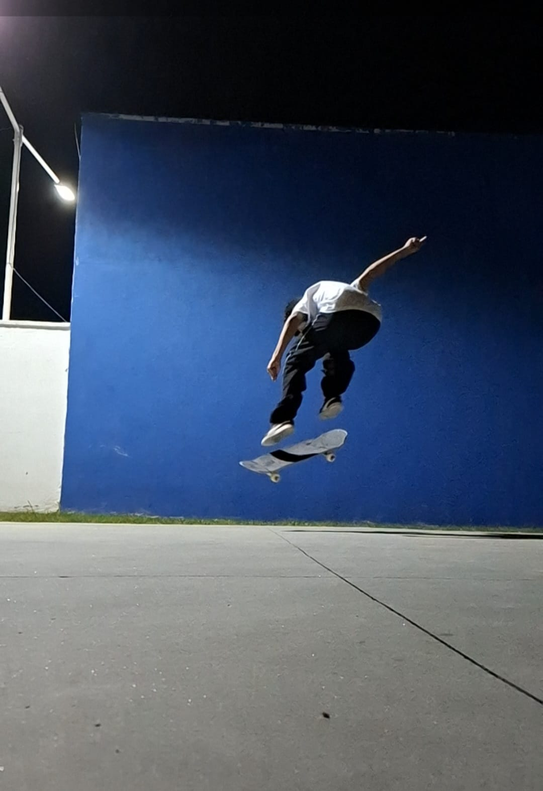
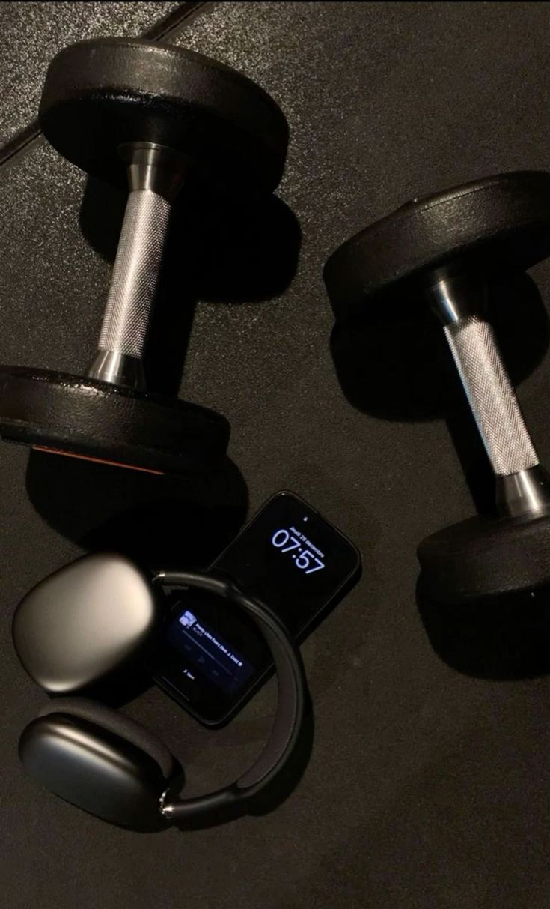
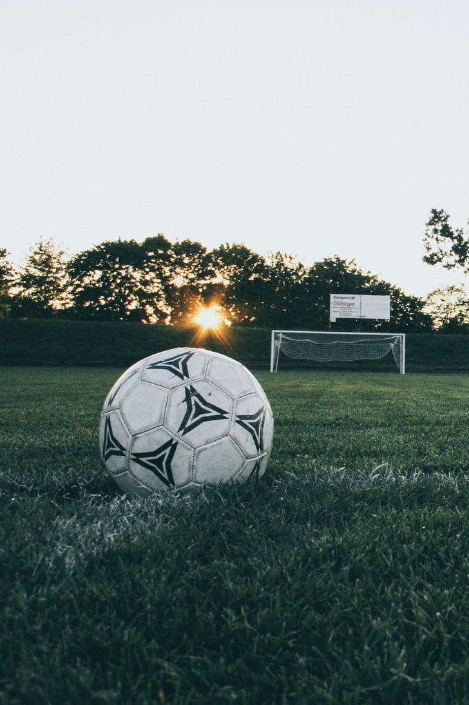
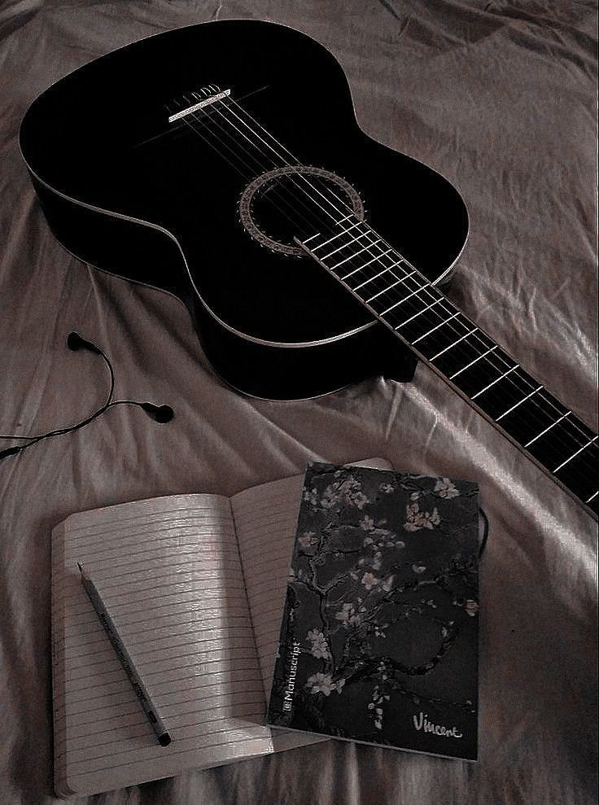
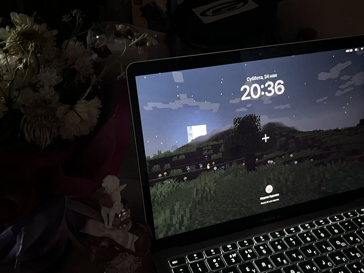
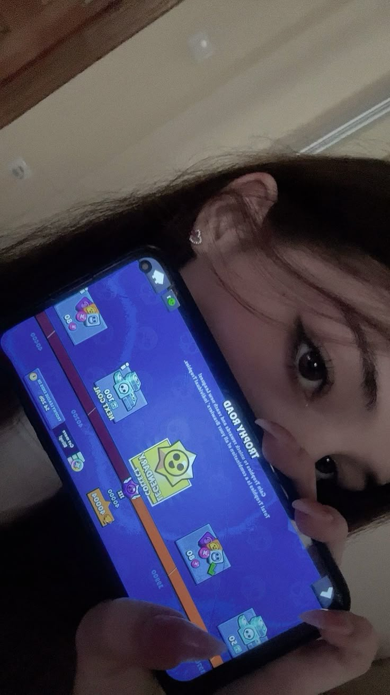

Curiosidades
Time de Futebol
O time pelo qual escolhi para torcer foi o Flamengo Não tive nenhum motivo em específico, seja estadual ou familiar, até por que se eu escolhesse o time por questao de família eu seria corinthiano atualmente, minha família por parte de pai inteira é corinthiana.

Esporte
Eu gosto bastante de praticar esportes, principalmente Skate, Academia e Futebol.
Skate
Comecei a andar de skate há aproximadamente 3 anos, na verdade hoje (13/03/2026) dia que estou escrevendo isso, completo exatos 3 anos que ando de skate. Parei algumas vezes por uns meses, isso prejudicou minha evolução mas acho dificil eu parar por completo, é o esporte que pratico e gosto muito.
Academia
Comecei a treinar em academias quando tinha 15 anos, fiz por mais ou menos 7 meses e parei. Voltei a treinar faz 4 meses mas só agora vou começar a tratar isso com mais foco, para ter uma boa evolução.
Academia sempre foi um esporte que gostei, considero treinar uma boa forma de ocupar a mente e ao mesmo tempo cuidar da minha saúde.
Futebol
Sempre joguei bola, mas nunca tratei isso como um esporte para focar e ser realmente bom, nao que eu seja horrível mas sei o básico.
Gosto de jogar com os amigos e com a fámilia, geralmente fico na posição de goleiro, onde tenho mais afinidade.



Música
Meu estilo musical é muito variado, escuto a maioria dos estilos então pode-se dizer que sou bem eclético para música. Tenho alguns estilos que escuto com mais frequência, como: Sertanejo, Phonk, Funk, Trap, Pop Eletrônica, MPB, entre outras.
De instrumentos eu toco violão, ultimamente nao tenho tocado muito mas pretendo voltar a tocar diariamente. Fiz algumas aulas com um amigo meu, sabia algumas musicas que eu gosto e aprendi grande parte da teoria inicial.

Jogos
Sempre gostei de jogar, seja no computador ou no celular. Nunca tive Video Game, então os consoles nao me atraem muito, meu gosto é PC mesmo.
No celular o único game que jogo é o Brawl Stars, jogo casualmente porém eu e um amigo temos potencial para entrar no competitivo desse jogo, tanto é que já jogamos campeonatos e chegamos bem perto de ganhar.
Agora no computador, ultimamente nao tenho jogado nada, só um joguinho de navegador chamado Bonk.io. Sempre gostei de jogar Minecraft com meu amigo, então esse jogo sempre será meu favorito.

